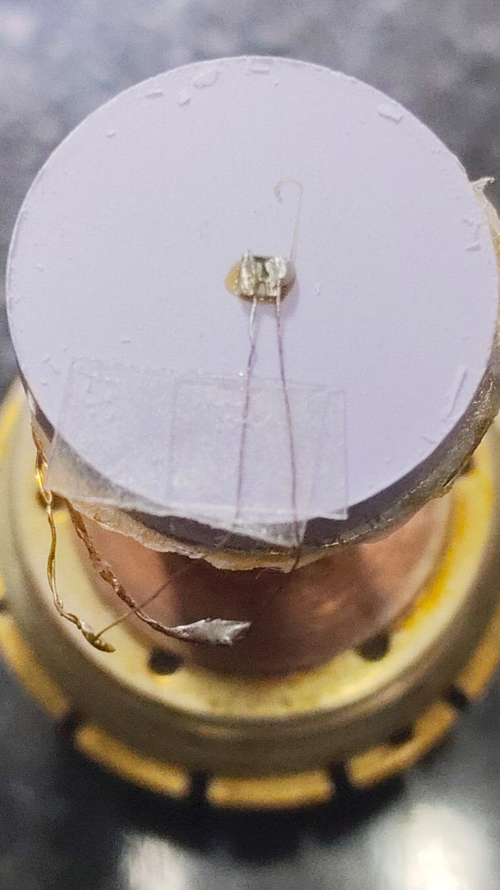

LGTO · ³He–⁴He DILUTION REFRIGERATION · THERMODYNAMICS
Probing a frustrated magnet
down to 100 mK.
A central part of my work on Li₃Gd₃Te₂O₁₂ is low-temperature heat-capacity measurement using a ³He–⁴He dilution refrigerator at UGC-DAE CSR, Indore. These measurements reveal the magnetic thermodynamics underlying its sub-kelvin cooling performance.
Extending heat capacity down to 100 mK allows us to resolve antiferromagnetic ordering near 250 mK and investigate how applied magnetic fields reshape the low-temperature magnetic state. I connect this thermodynamic picture with field-induced critical behaviour, entropy accumulation, and direct ADR measurements.
Dilution-refrigerator measurements & ADR results
Magnetic thermodynamics in the millikelvin regime
My experimental experience includes sub-kelvin heat-capacity measurements and assistance with helium-3 filling. Temperature- and field-dependent thermodynamic data, together with magnetic Grüneisen analysis and field–temperature phase diagrams, probe low-temperature ordering and field-induced critical behaviour in LGTO.
Connecting thermodynamics to refrigeration
Direct adiabatic demagnetization measurements in a separate custom ADR setup reached 165 mK. The cooling response demonstrates how magnetic entropy retained at low temperature can be used for sub-kelvin refrigeration. The dilution refrigerator provides the thermodynamic characterization needed to understand that performance.
Research supervised by Dr. Deepshikha Jaiswal-Nagar; dilution-refrigerator measurements at UGC-DAE CSR, Indore.
